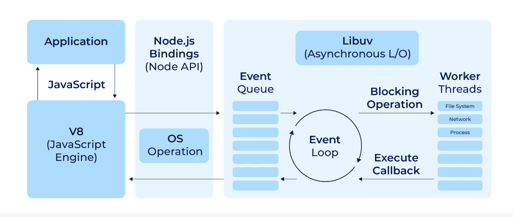

框架前置-服务端语言Node.js（最新版）
Node.js的前置掌握知识
- 词汇结构
- 表达式
- 数据类型
- 类
- 变量
- 函数
- this操作符
- 箭头函数
- 循环
- 作用域
- 模板字面量
- 严格模式
- ES6及以上
异步编程
- 异步编程和回调：回调函数，异步大类
- 定时器
- Promise
- 异步和等待
- 闭包：可以是函数访问外部作用域的变量，
- 事件循环
1.Node.js创建第一个应用：
在传统的PHP开发中需要Apache等HTTP服务器，而且需要配置mod_php来处理PHP脚本，从而生成动态内容，也就是说PHP依赖于外部的HTTP服务器来接受请求并提供Web页面
Node.js本身就内置了HTTP服务器模块，一位置Node.js在开发时，可以直接使用Node.js的HTTP模块来创建服务器、处理HTTP请求、生成Web页面，因此Node.js中Web应用的逻辑和HTTP服务器的实现时紧密集成的，不用再依赖外部的HTTP服务器软件。
创建Node.js前了解以下Node.js应用由下几部分组成：
- require指令：在Node.js中使用require指令来加载和隐入模块，引入的模块可以是内置的也可以是第三方模块或自定义模块
- 创建服务器：服务器可以监听客户端的请求，类似于Apache、Nginx等HTTP服务器
- 接受请求与响应请求：服务器很容易创建，客户端可以使用浏览器或终端发送HTTP请求，服务器接受请求后返回响应数据。
创建Node.js应用：
- 使用require指令来加载和引入模块
- 语法格式如下：
- const module = require（“module-name”）；
- module-name可以是文件路径，也可以是模块名称，如果是模块Node.js会自动在node_modules目录中查找该模块
- require指定会返回被加载的模块的到处对象，可以通过该对象来访问模块中定义的属性和方法，如果模块中有多个到处对象，则可以使用解构赋值的方式来获取
- 使用require指令来载入http模块，并将实例化的HTTP赋值给变量http，示例如下：
- var http = require（“http”）；
- 语法格式如下：
- 创建服务器
- 使用http.createServer（）的方法来创建服务器，并使用listen方法绑定8888端口，函数通过request，response参数来接收和响应数据，示例如下，在项目的根目录创建server.js的文件并写入代码
var http = require('http');http.createServer(function (request, response) {// 发送 HTTP 头部 // HTTP 状态值: 200 : OK // 内容类型: text/plain response.writeHead(200, {'Content-Type': 'text/plain'}); // 发送响应数据 "Hello World" response.end('Hello World\\n');}).listen(8888);// 终端打印如下信息
console.log('Server running athttp://127.0.0.1:8888/');
- 使用http.createServer（）的方法来创建服务器，并使用listen方法绑定8888端口，函数通过request，response参数来接收和响应数据，示例如下，在项目的根目录创建server.js的文件并写入代码
- 打开浏览器访问
- 使用node命令来执行上述代码
- node server.js
- Server running at http：//127.0.0.1：8888/
- 使用node命令来执行上述代码
分析Node.js的HTTP服务器
- const http = require（‘http’）；导入Node.js内置的http模块
- http.createServer（（req，res） ⇒ {…}）；创建一个新的HTTP服务器，每次请求都会执行回调函数。
- res.writeHead（200，{‘Content-Type‘：‘text/plain’}）；设置响应状态码和内容类型
- res.end（’Hello World\n’）；响应结束并发送数据
- server.listen（PORT,() ⇒ {…}）；监听指定端口并在服务器启动后输入信息
Node.js的工作机制
{kind=link}

- V8（js Engine）：Node.js核心，负责执行js代码，时Chrome浏览器的JS引擎，他将js代码编译成机器码来提高执行效率
- Node.js Bindings（Node API）：提供了一组API，允许js代码与操作系统交互，这些API包括文件系统、网络、进程等操作
- Libuv（Asynchronous L/O）：Libuv是一个跨平台异步i/o库，在Node.js下允许，用于处理文件系统、网络和进程等异步操作，Libuv使用事件循环和工作线程来处理这些操作，而不会阻塞主线程
- Event Loop：这是Node.js的核心概念之一，事件循环不断检查事件队列，处理时间和执行回调函数，他确保了Node.js的非阻塞和事件驱动的特性。
- Event Queue：事件队列用于存储即将处理的事件，当一个异步操作完成时，相关的回调函数会被放入队列中，等待事件循环处理
- Worker Threads：这些是用于处理阻塞操作的线程，如文件读写、网络请求等，他们允许Node.js在不阻塞主线程的情况下执行这些操作
- Blocking Operation：这些事可能阻塞线程的操作，同步的文件读写，Node.js中通常被放在工作线程中执行，避免阻塞事件循环
- Execute Callback：一旦一个异步操作完成，他的回调函数会被执行，这是通过事件循环来管理的。
2.NPM使用介绍：
NPM（node package manager）是一个js包管理工具，也是node.js默认包管理器，
NPM允许开发者轻松下载、安装、共享、管理项目的依赖库和工具。
NPM是Node.js自带的包管理工具
NPM主要功能如下：
- 包管理：NPM可以安装管理项目所需的各种第三方库，可以通过命令来安装、更新、删除依赖
- 版本管理：NPM支持版本控制，可以锁定某个特定版本的以来，或者根据需求选择最新的版本
- 包发布：NPM允许开发者将自己的库发布到NPM仓库中，其他开发者可以通过NPM来下载并使用这些库
- 命令行工具：NPM提供了强大的命令行工具，可以用于安装包、运行脚本、初始化项目等多种操作。
使用NPM命令来安装模块：
- NPM安装Node.js模块语法格式如下：
- npm install <Module Name>
- 示例安装常用的web框架模块express
- npm install express
- 安装好之后，包置于node_modules目录中国，代码只需要通过直接使用就可以，不需指定第三方包路径
- var express = require（’express‘）；
全局安装与本地安装：
npm包安装分为本地安装local和全局安装global两种，差别在于-g参数
本地安装：将包安装与node_modules目录，将信息保存到package.json的dependencies中
全局安装：用于安装命令行工具或需要在多个项目中使用的包
如果报错为（npm err！Error：connect ECONNREFUSED 127.0.0.1：8087）
解决办法为（npm config set proxy null）
- 本地安装
- 全局安装：用于哪些不需要在每个项目中重复安装的工具和命令行实用程序。
| 特性 | 本地安装 | 全局安装 |
| 安装范围 | 仅在当前项目中可用 | 在系统的全局环境中可用 |
| 命令使用 | npm install package-name | npm install -g package-name |
| 安装位置 | node_modules 目录 | 系统全局目录（依 OS 而异） |
| 使用场景 | 项目依赖（库、框架） | CLI 工具、项目生成器 |
| 访问方式 | 通过 require() 或 import 使用 | 在命令行中直接使用 |
| 依赖声明 | 在 package.json 中记录 | 不在 package.json 中记录 |
| 版本控制 | 不同项目中可用不同版本 | 系统中只保留一个版本 |
| 权限问题 | 无需特殊权限 | 可能需要管理员权限 |
查看安装信息
- 查看所有全局安装的模块
- npm list -g
- 查看某个模块的版本号
- npm list grunt
卸载模块
- 卸载Node.js模块
- npm uninstall express
- 卸载后，到/node_modules/目录查看包是否还存在，或者使用以下命令查看
- npm ls
更新模块
- 使用以下命令来更新模块，模块名
- npm update express
搜索模块
- 使用以下命令来搜索模块
- npm search express
创建模块：必须的package.jspn文件
- 初始化命令，自动生成package.json文件
- npm init
- 使用命令在npm资源库注册用户，使用邮箱注册
- npm adduser
- 使用命令来发布模块
- npm publish
版本号
版本号遵循语义化版本控制SemVer，格式为MAJOR.MINOR.PATCH，可附加额外标记
- MAJOR（主版本）：做了不兼容的API改动时增加版本，2.0.0
- MINOR（此版本）：添加新功能但保持向后兼容时增加版本，2.1.0
- PATCH（补丁版本）：当你修复bug而不增加新功能时增加版本，2.1.1
额外标记
- 预发布版本：如1.0.0-alpha或者1.0.0-beta.1，表示版本仍在测试中
- 构建元数据：如1.0.0+build.1，提供有关构建的信息
安装示例
- 安装特定版本
- npm install package-name@1.2.3
- 安装最新的主版本
- npm install package-name@……1.2.3（安装1.x.x的最新版本）
npm常用命令：npm help查看
| 命令 | 说明 |
npm init | 初始化一个新的 package.json 文件，交互式输入信息。 |
npm init -y | 快速创建带有默认设置的 package.json 文件。 |
npm install package-name | 本地安装指定包。 |
npm install -g package-name | 全局安装指定包，使其在系统范围内可用。 |
npm install | 安装 package.json 中列出的所有依赖。 |
npm install package-name --save-dev | 安装包并添加到 devDependencies。 |
npm update package-name | 更新指定的依赖包。 |
npm uninstall package-name | 卸载指定的依赖包。 |
npm uninstall -g package-name | 全局卸载指定的包。 |
npm list | 查看当前项目的已安装依赖包列表。 |
npm list -g --depth=0 | 查看全局已安装的依赖包列表（不展开依赖树）。 |
npm info package-name | 查看包的详细信息，包括版本和依赖等。 |
npm login | 登录到 NPM 账号。 |
npm publish | 发布当前包到 NPM 注册表。 |
npm unpublish package-name | 从 NPM 注册表中撤销发布的包（一般限 24 小时内）。 |
npm cache clean --force | 清理 NPM 缓存。 |
npm audit | 检查项目依赖中的安全漏洞。 |
npm audit fix | 自动修复已知的漏洞。 |
npm run script-name | 运行 package.json 中定义的脚本，例如 npm run start。 |
npm start | 运行 start 脚本（等同于 npm run start）。 |
npm test | 运行 test 脚本。 |
npm build | 运行 build 脚本。 |
npm outdated | 列出项目中有可更新版本的依赖包。 |
npm version patch/minor/major | 更新 package.json 中的版本号，自动更新版本。 |
npm ci | 使用 package-lock.json 快速安装依赖，适用于 CI/CD 环境。 |
package.json的说明与使用
该文件是Node.js项目中的核心文件，包含了项目的元数据、以来、脚本等信息
用于描述项目的元数据和依赖关系，通常位于项目的根目录中，而且是项目的配置文件
是一个JSON格式的文件，包含以下基本字段
name：项目的名称，应该是唯一的，通常使用小写字母和连字符。
version：项目的版本号，遵循语义化版本控制（Semantic Versioning）。
description：项目的简短描述。
main：项目的入口文件，通常是应用程序的启动文件。
scripts：定义了一系列的命令行脚本，可以在项目中执行特定的任务。
dependencies：列出了项目运行所需的所有依赖包及其版本。
devDependencies：列出了只在开发过程中需要的依赖包及其版本。
peerDependencies：列出了项目期望其依赖包也依赖的包。
optionalDependencies：列出了可选的依赖包。
engines：指定了项目兼容的 Node.js 版本。
repository：项目的代码仓库信息，如 GitHub 仓库的 URL。
keywords：项目的关键词，有助于在 npm 搜索中找到项目。
author：项目的作者信息。
license：项目的许可证信息。
使用方法
- 初始化项目：在项目目录中运行
npm init命令，npm 会引导你创建一个package.json文件，或者自动生成一个包含默认值的package.json。
- 安装依赖：使用
npm install <package-name>命令安装依赖，npm 会自动将依赖添加到package.json文件的dependencies或devDependencies中，并创建package-lock.json文件以锁定依赖的版本。
- 管理脚本：在
scripts字段中定义命令，例如"start": "node app.js"，然后可以通过npm start命令来运行这些脚本。
- 版本控制：使用
npm version命令来管理项目的版本号，npm 会自动更新package.json中的版本号，并生成一个新的 Git 标签。
- 发布包：当项目准备好发布到 npm 时，可以使用
npm publish命令，npm 会读取package.json中的信息来发布包。
- 依赖管理：
package.json和package-lock.json文件一起工作，确保项目在不同环境中的依赖版本一致。
使用package.json的好处
- 依赖管理：集中管理项目的依赖项及其版本。
- 自动化任务：通过
scripts字段可以方便地运行常见的任务。
- 版本控制：确保项目及其依赖版本的一致性，便于团队协作。
- 描述项目：为项目提供元数据信息，便于发布和共享。
3.Node.js的REPL（交互式解释器），理解为命令行模式
Node.js提供了内置的REPL，这是一个交互式编程环境，可以在终端中运行js代码
REPL主要操作：读取read、执行eval、打印print、循环loop
Node自带的交互式解释器可以执行以下任务
- 读取：读取用户输入，解析输入的js数据结构并存储在内存中
- 执行：执行输入的数据结构
- 打印：输出结果
- 循环：循环操作以上步骤直到用户两次点击ctrl+c退出
常用命令与快捷键如下
| 命令/快捷键 | 说明 |
.help | 显示 REPL 中可用的所有命令及其说明。 |
.exit | 退出 REPL 会话，相当于按 Ctrl + D。 |
.save <filename> | 将当前的 REPL 会话保存到指定文件中。 |
.load <filename> | 从指定文件中加载并执行代码到 REPL。 |
.break | 退出多行表达式输入模式，返回到单行输入模式。 |
.clear | 重置 REPL 的上下文，相当于清除所有变量和状态。 |
Ctrl + C | 强制退出当前输入或终止命令。如果按两次，则退出 REPL 会话。 |
Ctrl + D | 结束 REPL 会话，相当于 .exit。 |
Ctrl + L | 清除屏幕，类似于在终端中输入 clear。 |
方向键（↑/↓） | 浏览输入历史记录，查看并重新执行之前输入的命令。 |
Tab | 自动补全输入，显示可能的选项或补全命令。 |
_ | 用于访问上一次表达式的结果。 |
Ctrl + R | 进入反向搜索历史，搜索先前输入的命令。 |
Ctrl + U | 删除当前行从光标到行首的所有内容。 |
Ctrl + K | 删除当前行从光标到行尾的所有内容。 |
Ctrl + A | 移动光标到行首。 |
Ctrl + E | 移动光标到行尾。 |
Ctrl + B | 向后移动光标一个字符。 |
Ctrl + F | 向前移动光标一个字符。 |
Ctrl + N | 显示下一条历史记录（与方向键 ↓ 相同）。 |
Ctrl + P | 显示上一条历史记录（与方向键 ↑ 相同）。 |
Ctrl + Z | 挂起 REPL 会话，将其置于后台（在某些系统中可用）。 |
4.Node.js回调函数：
Node.js是一个基于V8引擎的js运行环境，js可以脱离浏览器运行在服务端，核心特性之一是非阻塞i/o（输入/输出）模型，可以使得Node.js处理高并发的网络应用
Node.js异步编程的直接体现就是回调
在Node.js中回调函数是一种异步编程模式，用于处理i/o操作，如文件读写、数据库交互、网络请求，这些操作通常需要花费较长时间，采用同步方式，会阻塞整个程序的执行，指导操作完成
使用回调函数，Node.js可以在i/o操作进行时继续执行其他代码，一旦i/o操作完成，在执行回调函数
Node.js是单线程的，可以通过事件驱动和回调机制来实现异步操作。
使用场景：
- 读取文件、写入文件等i/o操作
- 处理网络请求
- 数据库查询
例如可以一边读取文件，一边执行其他命令。在文件读取完成后，将文件内容作为回调函数的参数返回，这样执行代码时就没有阻塞或者等待文件i/o操作，就大大提高了Node.js性能，可以大量处理并发请求
回调函数一般作为函数的最后一个参数出现
function fool1（name，age，callback）{}
function fool2（value，callback1，callback2）{}
实例
- 阻塞代码示例，先666在结束
- 创建文件input.txt
- 内容为：text content 666
- 创建main.js文件
- var fs = require（’fs‘）；
- var data = fs.readFileSync（’input.txt‘）；
- console.log（data.toString（））；
- console.log（“程序执行结束！”）
- 创建文件input.txt
- 非阻塞代码示例，先结束在666
- 创建文件input.txt
- 内容同上
- 创建main1.js文件
- var fs = require（“fs”）
- fs.readFile（’input.txt‘，function（err，data）{
- if（err）return console.error（err）；
- console.log（data.toString（））；
- }）；
- console.log（“程序执行结束！”）；
- err为错误对象，如果读取失败会有值
- data是读取的文件内容
- 创建文件input.txt
- 总结阻塞与非阻塞不同
- 阻塞在文件读取完成后才执行程序
- 第二个实例不需要等待文件读取完成，这样可以在读取文件时同时执行接下来的代码，大大提高程序性能
- 阻塞是按顺序执行的，而非阻塞是不按顺序的，如果需要处理回调函数的参数，我们就需要写在回调函数中
回调地狱：
多个异步操作按顺序执行时，回调函数会导致代码嵌套，使得代码难以阅读和维护。
使用以下方式来改善代码的可读性和可维护性
- promises：一种新的异步编程模式，允许以链式方式处理异步操作，避免了回调嵌套
- async/await：基于promises，async/await提供了一种更接近同步代码风格的异步编程方式，使得异步代码更易于理解和维护
- 事件驱动编程：Node.js也支持事件驱动编程，通过监听和触发事件来处理异步操作
- promises：可以链式调用then方法，避免嵌套
const fs = require('fs').promises;
fs.readFile('file1.txt', 'utf8')
.then(data1 => {
console.log('Data from file1:', data1);
return fs.readFile('file2.txt', 'utf8');
})
.then(data2 => {
console.log('Data from file2:', data2);
return fs.readFile('file3.txt', 'utf8');
})
.then(data3 => {
console.log('Data from file3:', data3);
})
.catch(err => {
console.error('Error reading files:', err);
});
- async/await
const fs = require('fs').promises;
async function readFiles() {
try {
const data1 = await fs.readFile('file1.txt', 'utf8');
const data2 = await fs.readFile('file2.txt', 'utf8');
const data3 = await fs.readFile('file3.txt', 'utf8');
console.log('Data from all files:', data1, data2, data3);
} catch (err) {
console.error('Error reading files:', err);
}
}
readFiles();
5.Node.js事件循环：
事件循环
时Node.js处理非阻塞i/o操作的核心机制，使得单线程能够高效的处理多个并发请求，
Node.js是基于单线程的js允许时，利用事件循环来处理异步操作，如文件读取、网络请求、数据库查询等
事件循环的阶段：
- Timers：执行setTimeout（）和setInterval（）的回调
- I/O Callbacks：处理一些延迟的I/O回调
- Idle，prepare：内部使用，不常见
- Poll：检索新的I/O事件，执行与I/O相关的回调
- Check：执行setImmediate（）回调
- Close Callbacks：处理关闭的回调，如socket.on（’close‘，…）
事件循环的流程：
- 任务进入事件循环队列
- 事件循环按照阶段顺序进行，每个阶段有自己的回调队列
- 事件循环会在poll阶段等待新的事件到达，如果没有事件，会检查其他阶段的回调
- 如果setImmediate（）和setTimeout（）都存在，setImmediate（）在check阶段先执行，而setTimeout（）在timers阶段执行
- 实例：
输出顺序：main先打印，setImmediate（）和setTimeout（）执行顺序取决于当前事件循环的状态，一般setImmediate（）先执行setTimeout(() => {
console.log('Timeout callback');
}, 0);setImmediate(() => {
console.log('Immediate callback');
});console.log('Main thread execution');
宏任务与微任务：
- 宏任务：setTimeout、setInterval、setImmediate、I/O操作等
- 微任务：process.nextTick、Promise.then
- 执行顺序：微任务优先级高于宏任务，会在当前阶段的回调结束后立即执行
- 实例
输出结果：main、promise、timeoutsetTimeout(() => {
console.log('Timeout callback');
}, 0);Promise.resolve().then(() => {
console.log('Promise callback');
});console.log('Main thread execution');
process.nextTick（）
该方法会在当前操作结束后、下一个阶段开始前执行微任务，优先级高于Promise
输出结果：main、nextprocess.nextTick(() => {
console.log('Next tick callback');
});console.log('Main thread execution');
事件驱动程序：
在Node.js中事件驱动编程主要通过EventEmitter类实现
EventEmitter是一个内置类，位于events模块中，通过继承eventEmitter，你可以创建自己的事件触发器，并注册和触发事件
通过这种机制，Node.js可以高效的处理异步任务，即使在单线程环境下也能并发处理

- 基本概念：
- 事件：在程序中发生的动作或状态改变，例如一个文件读取完成或者一个HTTP请求到达，
- 事件触发器：EventEmitter时Node.js的内置模块，用来发出和监听事件
- 事件处理器：与时间关联的回调函数，事件发生时被调用
- 事件驱动的流程：
- 注册事件：在程序中通过EventEmitter实例注册时间和对应的处理器
- 触发事件：当指定的事件发生时，EventEmitter会触发该事件
- 处理事件：事件循环会调度响应的回调函数来执行任务
- Node.js有多个内置的事件，可以通过引入events模块，并通过实例化EventEmitter类来绑定和监听事件
- 实例
// 引入 events 模块
var events = require('events');
// 创建 eventEmitter 对象
var eventEmitter = new events.EventEmitter();以下程序绑定事件处理程序
// 绑定事件及事件的处理程序
eventEmitter.on('eventName', eventHandler);可以通过程序触发事件
// 触发事件
eventEmitter.emit('eventName');
- 实例
- hello.js：输出hello，world！
const EventEmitter = require('events');
const myEmitter = new EventEmitter();
// 注册事件处理器
myEmitter.on('greet', () => {
console.log('Hello, world!');
});
// 触发事件
myEmitter.emit('greet');
- main.js：node运行，连接成功、数据接收成功、程序执行完毕
// 引入 events 模块
var events = require('events');
// 创建 eventEmitter 对象
var eventEmitter = new events.EventEmitter();
// 创建事件处理程序
var connectHandler = function connected() {
console.log('连接成功。');
// 触发 data_received 事件
eventEmitter.emit('data_received');
}
// 绑定 connection 事件处理程序
eventEmitter.on('connection', connectHandler);
// 使用匿名函数绑定 data_received 事件
eventEmitter.on('data_received', function(){
console.log('数据接收成功。');
});
// 触发 connection 事件
eventEmitter.emit('connection');
console.log("程序执行完毕。");
Node应用程序是如何工作的
node应用程序中，执行异步操作的函数将回调函数作为最后一个参数，回调函数接受错误对象作为第一个参数
- 创建input.txt
- 内容自定test666
- 创建main.js
var fs = require("fs");fs.readFile('input.txt', function (err, data) {
if (err){
console.log(err.stack);
return;
}
console.log(data.toString());
});
console.log("程序执行完毕");
程序中fs.readFile（）时异步函数用于读取文件，在读取文件中发成错误，错误对象err会输出错误信息，如果没错，readfile跳过err对象的输出，文件内容通过回调函数输出
- 成功输出：程序执行完毕、test666
- 删除input.txt，失败输出：程序执行完毕、error：enoent，open’input.txt‘
6.Node.js EventEmitter：
Node.js所有的异步I/O操作在完成时候都会发送一个事件到事件队列
Node.js中的许多对象都会分发事件：net.Server对象会在每次有新连接时触发事件、fs.readStream对象会在文件被打开时触发事件，这些产生对象的事件，都是event.EventEmiter的实例
EventEmitter是Node.js中用于创建、注册、触发事件的核心模块
EventEmitter是事件驱动编程的基础，可以实现事件的发布与订阅机制
EventEmitter类
events模块的唯一对象，EventEmitter类的核心就是事件触发与事件监听功能的封装，使用require（‘events’）来访问该模块
- 引入模块并创建对象
//引入events模块
var events = require（‘events’）；
//创建eventEmitter对象
var eventEmitter = new events.EventEmitter（）；
- 实例化对象
对象实例化发生错误，会触发error事件，当添加新的监听器时，newListener事件会触发，监听器被移除时，removeListener事件被触发
//event.js文件
var EventEmitter = require（‘events’）.EventEmitter；
var event = new EventEmitter（）；
event.on（‘some_ event’,function(){ event对象注册监听器
console.log(’some_event事件触发’)；
}）；
setTimeout（function（）{
event.emit（‘some_event’）；event对象按顺序执行监听器
}，1000）；
运行代码，1秒后控制台输出‘some事件触发’，原理是event对象注册了some_event监听器，通过setTimeout在1秒后向event对象发送事件some_event，此时会调用some_event的监听器
- 事件监听器：
事件由事件名与多个参数组成，对于每个事件，EventEmitter支持多个事件监听器
//event.js文件
var events = require('events');
var emitter = new events.EventEmitter();
emitter.on('someEvent',function(arg1, arg2) {
console.log('listener1', arg1, arg2);
});
emitter.on('someEvent',function(arg1, arg2) {
console.log('listener2', arg1, arg2);
});
emitter.emit('someEvent', 'arg1 参数', 'arg2 参数');
例子中，注册了两个事件监听器，触发someEvent事件，
运行结果看到两个事件监听器回调函数被先后调用
EventEmitter提供了多个属性，on、emit等，on函数用于绑定事件函数，emit属性用于触发一个事件，下面为具体属性介绍
方法
- addListener（event，listener）
- 为指定事件添加一个监听器到监听器数组的尾部
- on（event，listener）
- 为指定事件注册一个监听器，接受一个字符串event和一个回调函数
- server.on（‘connection’，function（stream）{
- console.log（‘someone connected！’）；
- }）；
- once（event，listener）
- 为指定事件注册一个单次监听器，即监听器只会触发一次，触发后立即解除该监听器
- server.once（‘connection’，function{
- console.log（‘就一次凹’）；
- }）；
- removeListener（event，listener）
- 移除指定事件的某个监听器，监听器必须是该事件已经注册过的监听器，他接受两个参数，事件名称与回调函数名称
- var callback = function（stream）{
- console.log（‘someone connected！’）；
- }；
- server.on（’connection‘，callback）；
- server.removeListener（‘connection’，callback）
- removeAllListeners（【event】）
- 移除所有事件的所有监听器，如果指定事件，则删除指定事件的所有监听器
- setMaxListeners（n）
- 默认情况下，如果添加的监听器超过10个会输出警告信息，该函数用于改变监听器的默认限制数量
- listeners（event）
- 返回指定事件的监听器数组
- emit（event，【arg1】，【arg2】….）
- 按监听器的顺序执行每个监听器，如果事件由注册监听器则返回true，反之false
类方法
- listenerCount（emitter，event）
- 返回指定事件的监听器数量
- 建议使用：events0emitter0listenerCount（eventName）
例子：触发的事件没有监听器，会抛出错误
myEmitter.on（‘error’，（err）⇒{
专门打印错误
console.error（‘error event triggered：’，err）；
}）；
下面自定义一个错误，若不定义会自动抛出系统错误很长
myEmitter.emit（‘error’，new Error（‘something wrong’））；
运行结果：Error event triggered: Error: Something went wrong
事件：
- newListener：该事件在添加新监听器时被触发。
- event-字符串，事件名称
- listener-处理事件函数
- removeListener：从指定监听器数组中删除一个监听器，需要注意的是，此操作将会改变处于被删监听器之后的哪些监听器的索引。
- event-字符串，事件名称
- listener-处理事件函数
- 实例：通过connection事件，演示了EventEmitter类的应用，main.js文件如下
var events = require('events');
var eventEmitter = new events.EventEmitter();
// 监听器 #1
var listener1 = function listener1() {
console.log('监听器 listener1 执行。');
}
// 监听器 #2
var listener2 = function listener2() {
console.log('监听器 listener2 执行。');
}
// 绑定 connection 事件，处理函数为 listener1
eventEmitter.addListener('connection', listener1);
// 绑定 connection 事件，处理函数为 listener2
eventEmitter.on('connection', listener2);
var eventListeners = eventEmitter.listenerCount('connection');
console.log(eventListeners + " 个监听器监听连接事件。");
// 处理 connection 事件
eventEmitter.emit('connection');
// 移除监绑定的 listener1 函数
eventEmitter.removeListener('connection', listener1);
console.log("listener1 不再受监听。");
// 触发连接事件
eventEmitter.emit('connection');
eventListeners = eventEmitter.listenerCount('connection');
console.log(eventListeners + " 个监听器监听连接事件。");
console.log("程序执行完毕。");
运行结果如下
$ node main.js
2 个监听器监听连接事件。
监听器 listener1 执行。
监听器 listener2 执行。
listener1 不再受监听。
监听器 listener2 执行。
1 个监听器监听连接事件。
程序执行完毕。
error事件：
EventEmitter定义了一个特殊的事件error，它包含了错误的语义，我们再遇到异常时时候通常会触发error事件
当error被触发时，EventEmitter规定如果没有相应的监听器，Node.js会当作异常，退出程序并输出错误信息
为error事件的对象设置监听器，避免遇到错误后整个程序崩溃
var events = require('events');
var emitter = new events.EventEmitter();
emitter.emit('error');
会程序崩毁并报错如下
node.js:201
throw e; // process.nextTick error, or 'error' event on first tick
^
Error: Uncaught, unspecified 'error' event.
at EventEmitter.emit (events.js:50:15)
at Object.<anonymous> (/home/byvoid/error.js:5:9)
at Module._compile (module.js:441:26)
at Object..js (module.js:459:10)
at Module.load (module.js:348:31)
at Function._load (module.js:308:12)
at Array.0 (module.js:479:10)
at EventEmitter._tickCallback (node.js:192:40)
继承EventEmitter：
大多时候不会直接使用EventEmitter，而是在对象中继承他，包括fs、net、http在内，只要是支持事件响应的核心模块都是EventEmitter的子类，原因如下
- 首先，具有某个实体功能的的对象实现事件符合语义，事件的监听和发生应该是一个对象的方法。
- 其次JS的对象机制是基于原型的，支持部分多重继承，继承EventEmitter不会打乱对象原有的继承关系
- 大多数的Node.js核心模块（如HTTP、文件系统）都继承了EventEmitter，同时可以创建一个自己的类来继承EventEmitter
class MyEmitter extends EventEmitter {}
const customEmitter = new MyEmitter();
customEmitter.on('customEvent', () => {
console.log('Custom event fired');
});
customEmitter.emit('customEvent');
7.Node.js Buffer（缓冲区）：
JS语言中只有字符串数据库类型，没有二进制数据类型
Node.js中的Buffer类是用于处理二进制数据的核心工具，提供了对二进制数据的操作
Buffer类在处理文件操作、网络通信、图像处理等场景中很有效
特性：
- 二进制数据：Buffer对象是一个包含原始二进制数据的固定大小的数组，每个元素占用一个字节（8位），因此Buffer适合处理二进制数据，如文件内容、网络数据包
- 不可变性：Buffer对象的内容可以再创建后修改，但是其长度是固定不可变的